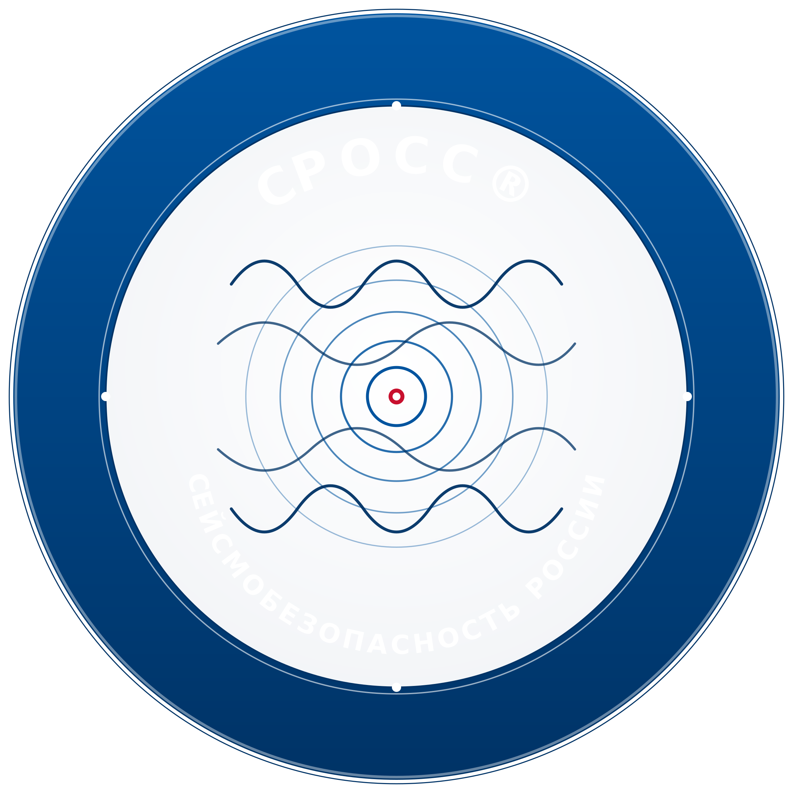
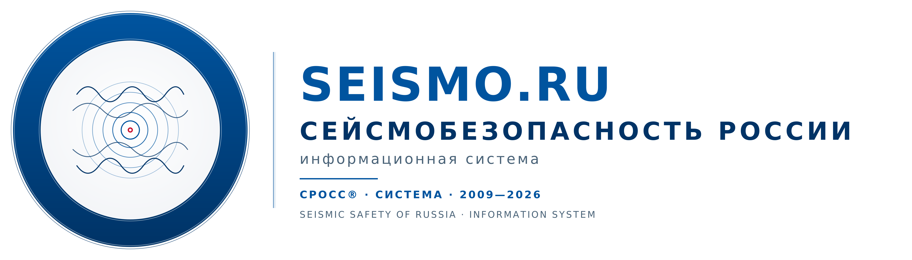
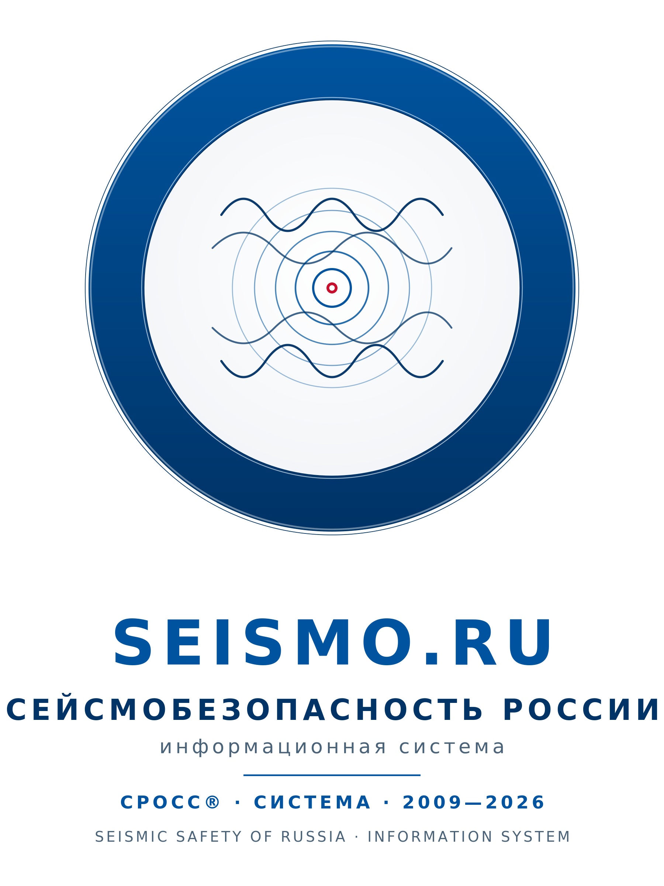
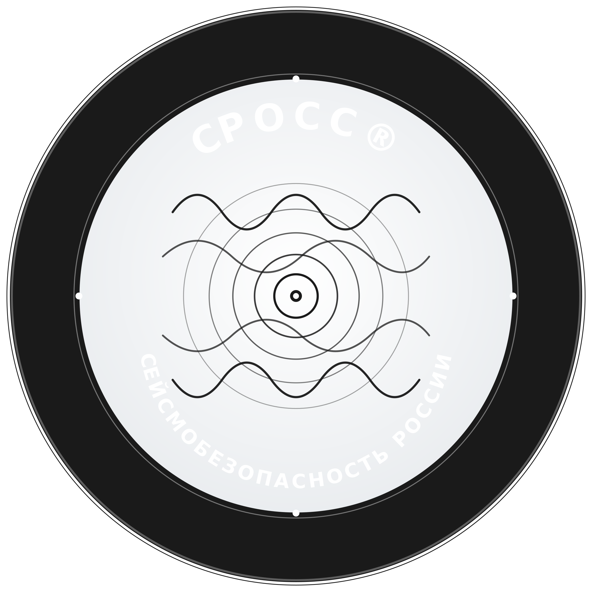
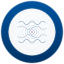
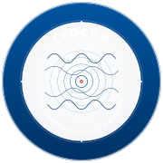
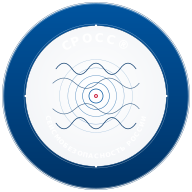
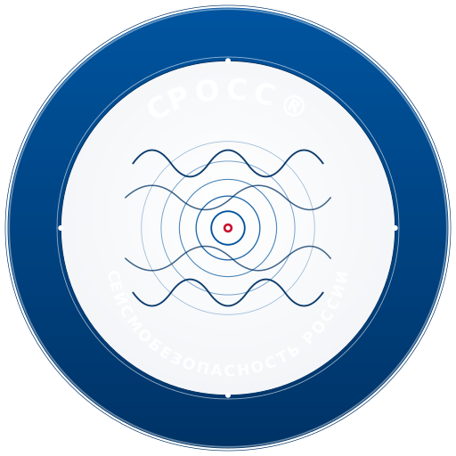

Четыре базовых формата эмблемы СРОСС®. Все четыре скомпилированы из мотивов исходной референс-таблицы: синий медальон в духе ООН-Хабитат (международный статус в системе ООН), сейсмический мотив в центре (концентрические волны от эпицентра — суть проекта), название системы СЕЙСМОБЕЗОПАСНОСТЬ РОССИИ / SEISMO.RU.



В основе палитры — официальный синий ООН (#00549F), усиленный глубоким тёмно-синим #003366 для акцентов. Стальной серый #4A6378 — вспомогательный тон для подзаголовков и метаданных. Сигнальный красный #C8102E используется точечно и только для маркировки эпицентра (как на настоящих картах сейсмической опасности).
Пример размещения горизонтального логотипа в шапке сайта. Эмблема и типографика образуют единый визуальный блок, который без адаптации встаёт в действующую шапку seismo.ru. Справа — навигация по основным разделам будущего сайта.
Информационная система СРОСС® объединяет данные о сейсмической опасности, методологию оценки рисков и инструменты целевого планирования градостроительной деятельности. Проект развивается с 2009 года на базе патентованной технологии сейсмологического мониторинга.
Все размеры сгенерированы из единого SVG-источника эмблемы — это гарантирует полную идентичность отображения на любом устройстве и при любом разрешении. SVG-исходники редактируемы.



